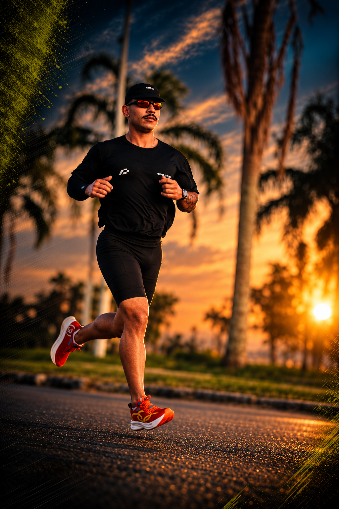
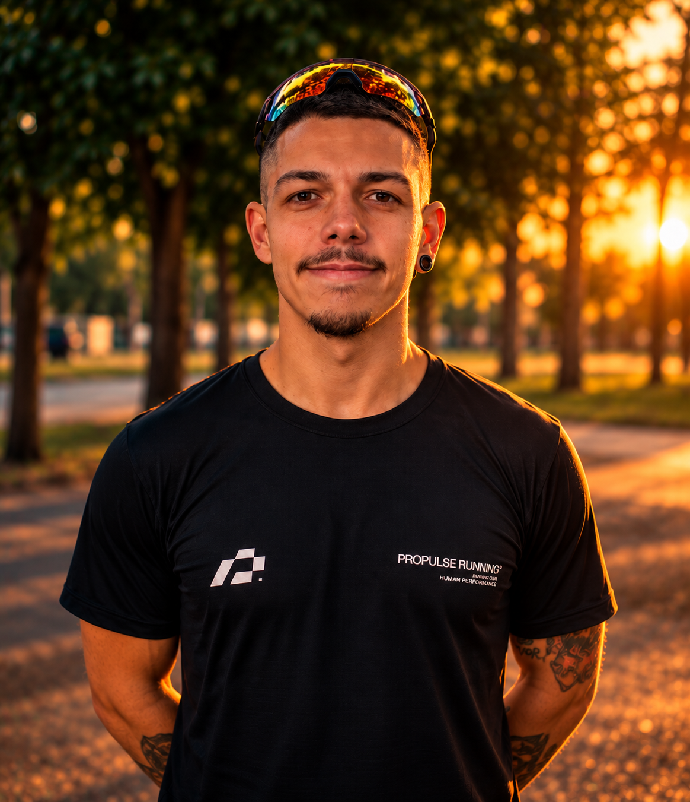
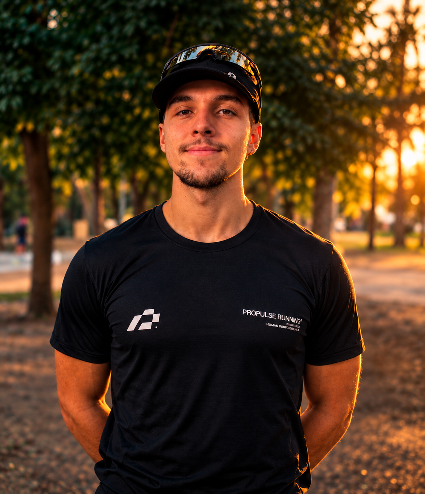

Entrevista inicial
Antes de prescrever qualquer treino, o treinador conhece seu histórico, sua rotina e seus objetivos. O planejamento começa por você.

Uma assessoria para quem quer construir constância sem deixar de sentir o caminho.
Começar a correr ↗A Propulse existe para tornar a corrida mais possível, mais consciente e mais próxima da sua rotina.
Organizamos o treino sem engessar o caminho. Porque evolução também é saber ouvir o corpo, ajustar a rota e continuar.
Antes de prescrever qualquer treino, o treinador conhece seu histórico, sua rotina e seus objetivos. O planejamento começa por você.
Elaborada manualmente, semana a semana, considerando seu nível, sua disponibilidade e seu momento na corrida.
Seu planejamento acompanha sua realidade, sua recuperação e as mudanças na rotina que possam afetar seu desempenho.
As decisões do planejamento seguem princípios de treinamento traduzidos para uma rotina que faça sentido para você.


Treinos personalizados para o seu nível, objetivo e rotina.
Estratégia e progressão para chegar preparado ao seu próximo desafio.
Feedbacks e ajustes para que o planejamento acompanhe você.
Quando o treino encontra direção, a relação com a corrida também muda.
Cada semana começa sem saber exatamente o próximo passo.
↓Uma sequência pensada para o momento e o objetivo de cada aluno.
A rotina muda e o treino fica sempre para depois.
↓Uma orientação que respeita a vida real sem perder a direção.
Vamos começar de onde você está